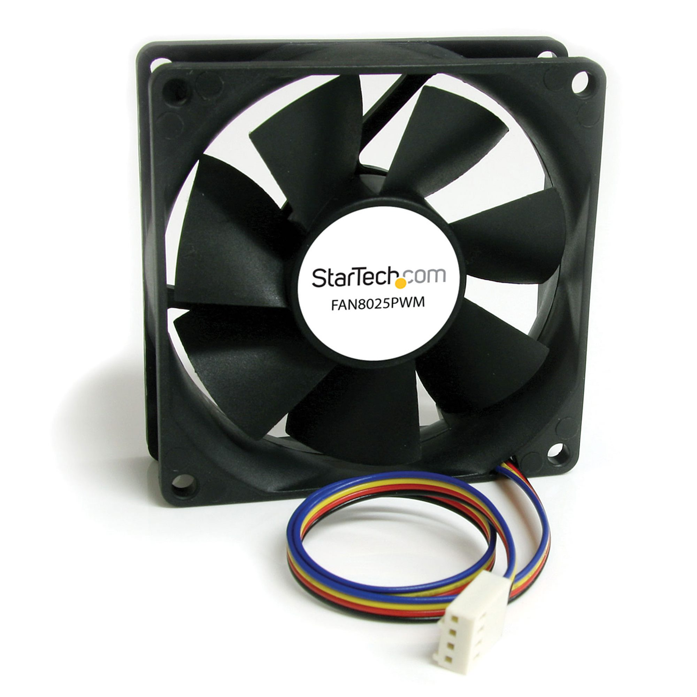

Ventilador de refrigeración

La refrigeración por aire en computadoras es un método para disipar el calor
generado por componentes eléctricos (CPU,GPU,…). Por lo general, el aire
caliente es sacado desde el interior del dispositivo con los ventiladores.
Los ventiladores se utilizan especialmente en las fuentes de poder, ubicadas generalmente
en la parte trasera del gabinete de la computadora. Actualmente, también se incluyen
ventiladores adicionales para el microprocesador y circuitos que pueden sobrecalentarse.
Incluso a veces son usados en distintas partes del gabinete para una refrigeración general.
Los ventiladores son elementos que, en funcionamiento, suelen ser de los más ruidosos
en una computadora. Por esta razón, deben mantenerse limpios y aceitados, y ser de buena
calidad. Los viejos ventiladores podían producir sonidos de hasta 50 decibelios; en cambio,
los actuales están en los 20 decibelios. Por lo general, los ventiladores en las PC de
escritorio están continuamente encendidos; en cambio, en las computadoras portátiles suelen
activarse y apagarse automáticamente dependiendo de las necesidades de refrigeración
(por una cuestión de ahorro energético).
Actualmente, también las computadoras incluyen detección y aviso de funcionamiento de
ventiladores. Antiguamente, podían estropearse y dejar de funcionar sin que el usuario
lo notase, ocasionando que la computadora aumentase su temperatura, produciendo errores
de todo tipo. Los ventiladores nunca deben ser obstruidos con ningún objeto, pues esto
puede causar un sobrecalentamiento en la computadora.
Una de las fuentes de problemas de mantenimiento de las computadoras son los sistemas
de refrigeración por aire, que a largo plazo producen el sobrecalentamiento de algunos
componentes críticos de la computadora: microprocesador, procesador gráfico, chips de
los puentes norte y sur, etc. Esto puede llevar a problemas de funcionamiento como bloqueos
o reinicios inesperados de la computadora y, en el peor de los casos, a averías irreparables
de estos componentes que obligan a sustituir el procesador, la placa base, la tarjeta
gráfica o, incluso, los discos duros, en este caso, con la consiguiente pérdida de datos.
Uno de los principales factores que afectan la calidad de los sistemas de refrigeración
por aire es el diseño de la caja de la CPU, que debe contar con al menos una entrada y
una salida de aire adecuadas para la colocación, en las mismas, de ventiladores de 120
× 120 mm, que producirán con facilidad un adecuado caudal de aire que renueve y mantenga
el aire del interior de la caja a una temperatura próxima a la del ambiente exterior.
Otro factor que suele tenerse poco en cuenta, pero cuya importancia no es despreciable,
es el tipo de cables de datos que se utilizan para conectar los discos duros, DVD y
disqueteras a la placa base. Si estos cables son del tipo cinta, pueden dificultar
la circulación de aire por el interior de la caja, por lo que es más recomendable
el uso de cables tipo SATA.